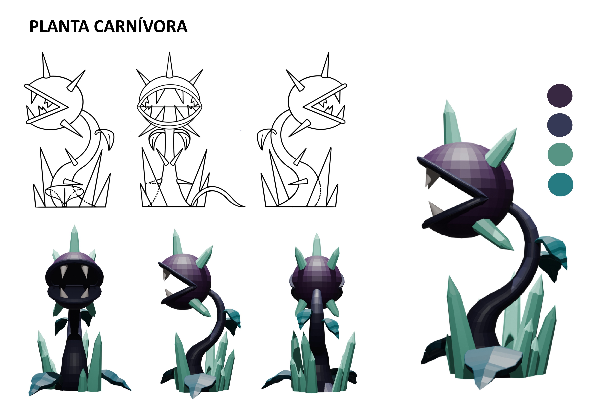
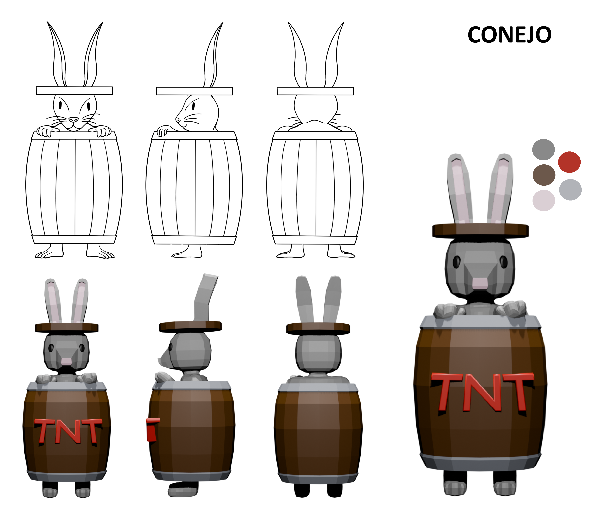
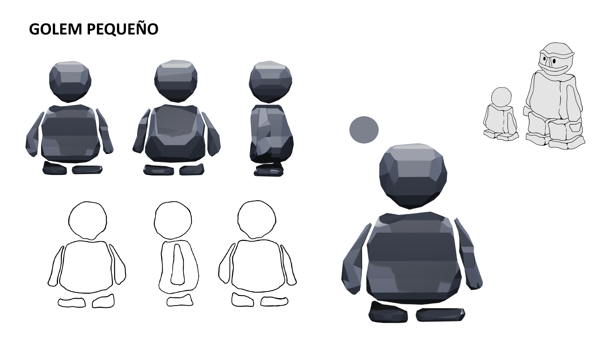
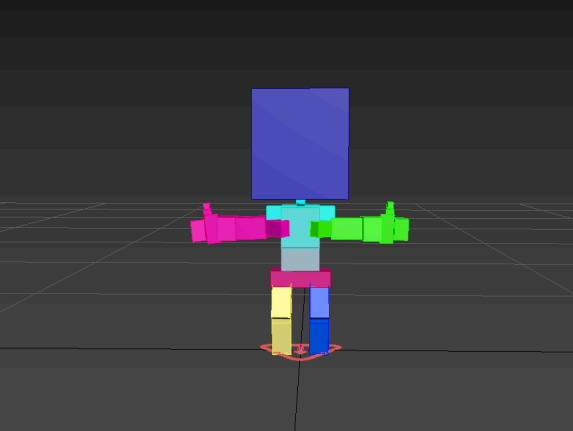
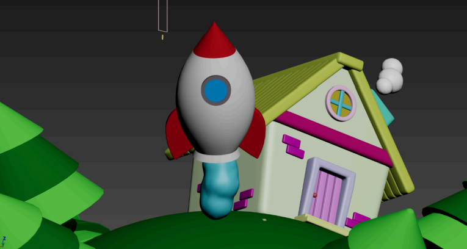
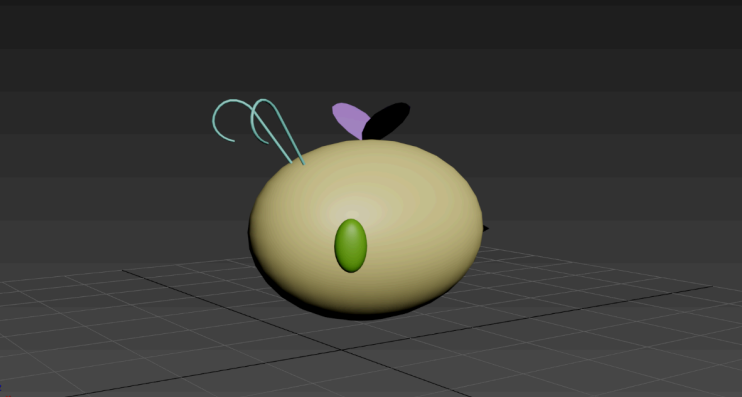
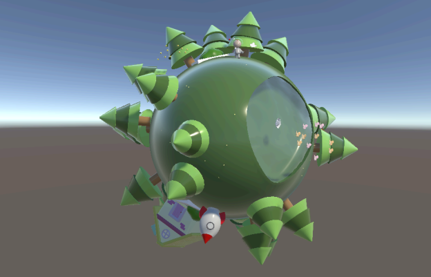

Sobre mí
Soy una estudiante de 4º curso del Grado en Diseño y Desarrollo de Videojuegos en la URJC. Mi perfil se orienta al ámbito artístico‑técnico, con experiencia en modelado 3D, texturizado, rigging y animación. A lo largo del grado he trabajado principalmente con Unity y 3ds Max, por lo que son las herramientas que mejor domino. Además, he ampliado mi formación por mi cuenta aprendiendo a utilizar herramientas como Blender.
Proyectos
En esta sección presento los proyectos en los que he participado, tanto de forma individual
como en equipo, desarrollados durante diversas Game Jams y a lo largo de distintas prácticas del grado.
Rock & Mole




Este juego es una práctica de la universidad en la que me he encargado del apartado artístico de los personajes,
realizando el modelado, rigging, skinning y animación. Se trata de un roguelite en el que el jugador debe conseguir materiales en cada run para mejorar su equipamiento y avanzar cada
vez más profundo en la mina hasta enfrentarse a los distintos jefes.
The Pit
Este juego lo hicimos 5 personas para una Game Jam de la universidad. La Game jam duraba 30 días con la temática "Te vas a caer" y de género "Terror",
en esta game jam me encargué del diseño de niveles, creando la estructura, ritmo y progresión de los espacios jugables para reforzar la tensión y la atmósfera del juego.
Astrobuddies






Esta práctica de la universidad consistía en crear un escenario y un personaje completamente desde cero, abordando todo el proceso de modelado, rigging, skinning y
animación en 3ds Max. Para el proyecto decidí diseñar un pequeño planeta estilizado y un astronauta que lo explora, trabajando tanto la construcción del entorno como la expresividad
y movilidad del personaje. El objetivo era integrar todos los elementos en una escena coherente y animada, demostrando control sobre el pipeline completo de creación 3D.
TFG
El TFG es un proyecto que estoy haciendo junto a una compañera consiste en la creación de un corto de animación 3D, con la ayuda de nuestro tutor Sergio Galindo.
Contáctame
Si queréis saber más acerca de mi formación, o tener una información más completa podéis ir a echar un vistazo a mi CV.
Me podéis escribir al correo sasa.lara06@gmail.com. O al LinkedIn.
En esta sección presento los proyectos en los que he participado, tanto de forma individual como en equipo, desarrollados durante diversas Game Jams y a lo largo de distintas prácticas del grado.
Rock & Mole



Este juego es una práctica de la universidad en la que me he encargado del apartado artístico de los personajes,
realizando el modelado, rigging, skinning y animación. Se trata de un roguelite en el que el jugador debe conseguir materiales en cada run para mejorar su equipamiento y avanzar cada
vez más profundo en la mina hasta enfrentarse a los distintos jefes.



Este juego es una práctica de la universidad en la que me he encargado del apartado artístico de los personajes, realizando el modelado, rigging, skinning y animación. Se trata de un roguelite en el que el jugador debe conseguir materiales en cada run para mejorar su equipamiento y avanzar cada vez más profundo en la mina hasta enfrentarse a los distintos jefes.
The Pit
Este juego lo hicimos 5 personas para una Game Jam de la universidad. La Game jam duraba 30 días con la temática "Te vas a caer" y de género "Terror",
en esta game jam me encargué del diseño de niveles, creando la estructura, ritmo y progresión de los espacios jugables para reforzar la tensión y la atmósfera del juego.
Este juego lo hicimos 5 personas para una Game Jam de la universidad. La Game jam duraba 30 días con la temática "Te vas a caer" y de género "Terror", en esta game jam me encargué del diseño de niveles, creando la estructura, ritmo y progresión de los espacios jugables para reforzar la tensión y la atmósfera del juego.
Astrobuddies




Esta práctica de la universidad consistía en crear un escenario y un personaje completamente desde cero, abordando todo el proceso de modelado, rigging, skinning y
animación en 3ds Max. Para el proyecto decidí diseñar un pequeño planeta estilizado y un astronauta que lo explora, trabajando tanto la construcción del entorno como la expresividad
y movilidad del personaje. El objetivo era integrar todos los elementos en una escena coherente y animada, demostrando control sobre el pipeline completo de creación 3D.
TFG
El TFG es un proyecto que estoy haciendo junto a una compañera consiste en la creación de un corto de animación 3D, con la ayuda de nuestro tutor Sergio Galindo.




Esta práctica de la universidad consistía en crear un escenario y un personaje completamente desde cero, abordando todo el proceso de modelado, rigging, skinning y animación en 3ds Max. Para el proyecto decidí diseñar un pequeño planeta estilizado y un astronauta que lo explora, trabajando tanto la construcción del entorno como la expresividad y movilidad del personaje. El objetivo era integrar todos los elementos en una escena coherente y animada, demostrando control sobre el pipeline completo de creación 3D.
TFG
El TFG es un proyecto que estoy haciendo junto a una compañera consiste en la creación de un corto de animación 3D, con la ayuda de nuestro tutor Sergio Galindo.
El TFG es un proyecto que estoy haciendo junto a una compañera consiste en la creación de un corto de animación 3D, con la ayuda de nuestro tutor Sergio Galindo.
Contáctame
Si queréis saber más acerca de mi formación, o tener una información más completa podéis ir a echar un vistazo a mi CV.
Me podéis escribir al correo sasa.lara06@gmail.com. O al LinkedIn.